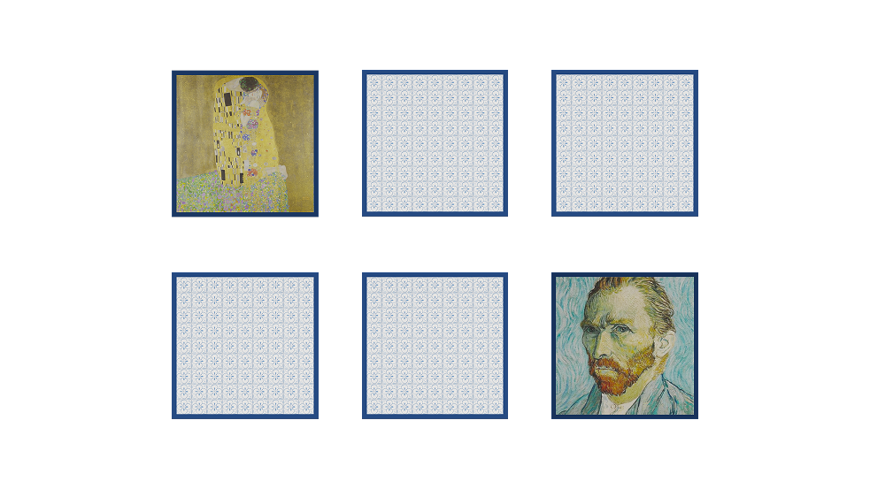

Challenge
Designing for older adults in caregiving contexts meant every interaction had to work without instruction. Hand-tracking precision on WebXR varies across devices and body positions, including lying down. The core challenge was building card-matching mechanics that felt rewarding with imprecise input, while keeping cognitive load low enough that memory engagement, not interaction frustration, drove the experience.

Deliverables
Memory loss presents significant challenges for older adults, particularly those in caregiving facilities where cognitive stimulation is essential for well-being. The goal of Memory Game XR was to create an accessible, engaging, and intuitive mixed reality experience that could be played comfortably in stationary XR setups, including while lying down. A key design challenge was ensuring that hand interactions felt natural and responsive, with clear visual feedback for selected objects. The game also needed to balance cognitive engagement with ease of interaction, making it suitable for users with varying levels of mobility.
Inspiration
The project was inspired by childhood nostalgia and art appreciation, incorporating iconic paintings as a way to trigger long-term memory recall. It also took inspiration from existing cognitive therapy techniques, adapting them into a mixed reality format that allowed users to interact with visual content in an immersive way. The research was conducted with a potential user persona in mind, such as Susana Baker (72 y.o.), who enjoys reminiscing about past experiences but struggles with short-term memory.

Process
The prototype was built using WebXR and mr.js, ensuring cross-platform compatibility while optimizing for hand-tracking and spatial interaction. Early testing focused on: hand interactions and raycasting mechanics to ensure precise object selection, card-matching logic and feedback loops for a smooth and rewarding gameplay experience, user spatial positioning considerations to enhance comfort for stationary players. User research was conducted through keynote presentations and feedback sessions, refining the mechanics based on usability insights.
Achievements
The Memory Game XR prototype demonstrated the potential of mixed reality in cognitive therapy, particularly for older adults in caregiving facilities. Early testing suggested that the art-driven memory exercise helped evoke emotional connections, encouraging participants to share personal stories and engage in meaningful discussions. The research highlighted the importance of intuitive interaction design in XR for accessibility, providing valuable insights for future applications in healthcare and memory rehabilitation.